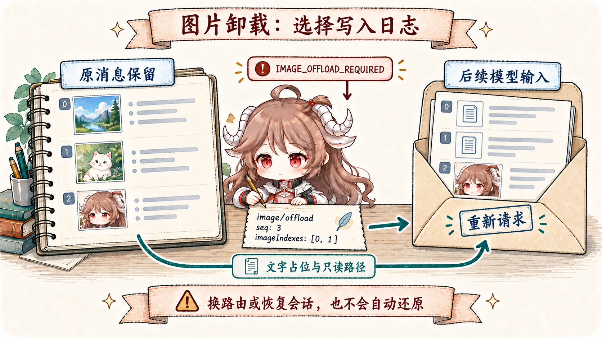
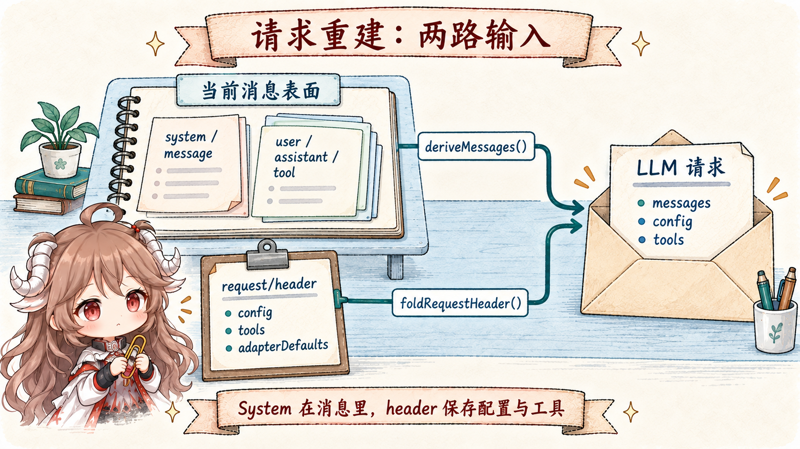

“上下文太长就总结一下”隐藏了四个不同问题：按什么请求算 token；哪一段可以切而不拆开 tool call/result；摘要是追加还是替换；恢复时 system、tools、provider config 和 session prefix 从哪里回来。只回答第一个，得到的只是一个偶尔能跑的 prompt trick。
DSH 把它建成一条可审计的状态转换。ctx.tokenMeter 为真实 request envelope 和 current surface 定价；pruner 可先处理纯体积问题；compaction backend 在日志里建立 bracket；一次摘要替换只提交一条带 provenance 的 user/message replacement。
阅读契约。读完以后，你应该能解释：0.8 和 0.16 分别控制什么；为什么低于 pressure 时不能顺手 prune；为什么区间按 surface position 而不是 numeric seq；summary request 怎样复用旧 KV cache、未来 request 又从哪里失效；以及 raw log、current surface、request/header 各自负责哪一部分重建。
证据边界。本文固定在提交 ddefc45。默认值属于 compaction-basic，不是 compaction seam 的永久协议；不同 provider 的 capacity、usage 与 KV-cache 计费仍由 adapter 报告。源码保证 replacement 和事件关系，不保证模型摘要一定保留所有业务语义。
一、先为完整请求定价，再决定是否压缩
1.1 Pressure 不是 messages.length
BasicCompactionEngine 读取最近一次 canonical logged envelope 和同一 log revision 的 current surface。计量因此覆盖 system prompt、tool schemas、routing、assistant completion、tool results，以及已进入日志的 context 与 steering，而不是只数对话字符串。
容量来自最近 durable provider/model route 的 adapter。默认在窗口的 thresholdRatio: 0.8 处触发，并按窗口的 retainRatio: 0.16 为最近历史保留 token 预算；不是保留 16% 的消息条数。每个精确 provider/model 可覆盖策略。adapter 不提供 capacity 时，显式 pressure 检查抛配置错误，自动 pre-step listener 则按目标警告一次并继续完整历史；provider 确认的 canonical overflow 仍能尝试缩减。图片节点计价会采用该 route 声明的图片价格，replacement 的日志 shadow price 仍使用固定启发式，两者职责不同。
1.2 只选择完整、平衡、可替换的 surface units
Range selection 从最老的非 system-head 节点开始，把 recent tail 留在右侧，并用 tool-pairing boundary helpers 防止 unanswered call 穿过切口。surface 第 0 项若是 system/message，永不进入压缩范围；之后追加的 system 更新则属于可压缩历史。turn boundary 不会保护一次 runaway turn 里的旧 step；相反，一个仍开放、不可分割的尾部会让 compaction 暂时 decline，等它闭合。
区间是 surface-position span，不是 seq 数字范围。旧范围被 replacement 后，新事件虽然拥有更高 seq，却占回被遮蔽区间的位置；再次压缩必须按当前位置读取，不能用 start <= seq <= end 猜成员。
二、先做无模型裁剪，再付摘要调用成本
2.1 tool-result pruner 只改模型表面
ctx.toolResultPruner 默认只在 text blocks 合计超过 8192 个 Unicode code points 时动作，保留前 4096、固定 marker 和后 1024。非文本 block 保持相对顺序；切片不会拆 UTF-16 surrogate pair，但可能拆 grapheme cluster。
新 tool/result 复制原 data，仅改 content，并用 surfaceOp: replace 遮蔽原节点；sourceEventSeqs: [originalSeq] 引用被替换结果。裁剪输入来自原节点的当前消息投影，因此已经记录的图片卸载标记也保留在替换内容中。每次 replacement 之前还紧邻追加 compaction/prune，记录被遮蔽节点与启发式 token 价格，供计量投影扣除旧价格。原事件仍在 append-only log；新文本严格变小且不再超过阈值，所以重复扫描不会继续裁剪同一文本。
2.2 Prune 是 pressure-qualified pass，不是后台清洁工
低于 pressure 的 step check 不 prune。只有 pressure 或 canonical overflow 已经成立，basic backend 才调用可选 pruner，随后重新用 token meter 测量；若已经安全，就跳过摘要调用。这个顺序把便宜、确定的 syntactic shrink 放在模型调用前，又避免仅因“工具输出看起来大”就破坏仍可复用的 KV prefix。
character budget 也不是 token budget。若 pruned tool unit 仍因非文本内容或不可裁部分超窗，或者 system/tools envelope 本身过大，surface compaction 无法修复。
2.3 图片预算溢出由独立的 offload 事件处理

一条工具结果可能只有几百字，却含有多张高成本图片；文本 pruner 无法处理这种压力。image-offload 插件 只响应带 offloadImages 数量的 IMAGE_OFFLOAD_REQUIRED。它按失败请求的消息顺序选最老的 user/tool 输入图片，跳过 assistant 输出与已卸载图片，把消息 seq 和深度优先图片索引记为 image/offload。
// 形状级示例：选择当前消息节点 42 的第一张图片
{ type: 'image/offload', data: { targets: [{ seq: 42, imageIndexes: [0] }] } }
// 后续模型请求：该图片变成附件名称和可用只读路径的文字占位
// 原消息事件及其 surface 节点身份不变这条路径没有新建 replacement 节点：消息投影标记被选中的图片，adapter 发出文字占位，token meter 也按这个选择重新计价。Agent 重新生成 request/header 后重试，不消耗 provider retry budget，也不记录 llm/retry。换大模型、恢复会话或后续压缩不会自动还原这些图片；重新读取附件只能创建一次新的图片出现。代价是本次必须先经历 adapter 拒绝，而且缓存从第一条变化消息处不再匹配。
三、一份成功摘要只提交一次区间替换
3.1 五步 bracket 把来源、替换和锁串在一起
compaction/start同步追加，获取 log-recorded lock。- backend 生成 summary，并重新验证选择的 span 没漂移。
compaction/summary记录原始 summary、range、shadowed seqs、token 计量、摘要调用目标及 usage；它是 log-only。- 一条
user/message携带 checkpoint 内容、compactCheckpointSource(compactionId)与surfaceOp: replace；其sourceEventSeqs依次引用 start、summary 和全部 shadowed seq，这是摘要提交唯一的 surface replacement。 compaction/end最后释放 lock。
因此模型下一次保留 system head，并看见一个 <compacted-summary> checkpoint 和 recent tail；人类 transcript 与精确审计仍能读旧 append-origin 事件。summary 不会作为第二份 history 追加，compaction/* 也从不进入 model surface。
3.2 Convergence 和 changed-span 都必须显式失败
Basic backend 拒绝不比 source 更小的 summary；已成功缩减但压力仍高时，才按 compactionRetries 继续压缩 checkpoint，耗尽后抛错。自动 pre-step listener 捕获操作错误并警告、继续 turn；canonical overflow 恢复则只有 replacement generation 前进才允许重试，即使先完成 pruning、后面的摘要失败也可满足这一条件。没有任何缩减进展时，原 provider 错误保持有效。
摘要请求失败时还有同步 compaction/summary-error waterfall。图片卸载插件只选择这次摘要区间内的图片；一旦记录选择，backend 重新派生消息与计价，再在同一个 bracket 内调用摘要。若之后失败或取消，已经记录的图片卸载仍有效。因此“没有提交摘要 replacement”不等于“模型可见输入完全没变”。待替换区间的其他变化会拒绝过期摘要；关闭 bracket 失败仍会留下阻塞当前 lifecycle 的 orphan start。
四、摘要调用和未来请求有相反的 cache 方向
4.1 Summarizer replay 旧前缀，只有尾部 instruction 是新的
默认 summarizer 直接调用一次 ctx.llm.stream()：先从 surface 第 0 项派生 system 消息，再接被遮蔽区间的消息，tools 则取自最新 request/header，最后追加固定 compaction instruction。system head 不进入摘要替换范围，空 head 不产生 wire message。保持同 route 和相同前缀让 provider 有机会复用 warm cache；这仍取决于 provider 的缓存合同，不能从本地 replay 推导必然命中。换 route、非 head 区间或图片 offload 都可能减少这份优势。
调用设置 purpose: 'compaction'，但不改变 model-visible body。只有返回的 text 进入 checkpoint；reasoning 与 tool calls 不进入，image output 以 UNSUPPORTED_CONTENT 失败，避免生成孤儿调用或静默丢内容。
4.2 Replacement 让未来请求从第一个变化 token 起失效
未来 conversation request 的 system、tools 和 replacement 前未改变的 history 仍可复用；从第一个被遮蔽的 token 起，旧 cache 不再匹配，checkpoint 与 recent tail 需要重新计算。append-only log 没变不等于 request bytes 没变：KV cache 服从模型输入表面，不服从审计存储。
五、System 消息与 request header 分工重建请求
5.1 System 已经属于派生消息序列

deriveMessages() 现在同时派生 system、user、assistant 与 tool 消息。system prompt 来自 system/message，通常以 surface 第 0 项作为稳定 head；支持 in-history 更新的 route 还可在后续位置看到 system 更新。request/header 只保存 config、adapterDefaults 与 tools，不能再从 header.system 取 system。
foldRequestHeader() 仍选择日志前缀中的最后一个完整 snapshot，空 tools 规范化为 absent，schemas 按顺序比较。除 initial、resume、change 外，reason 还有 series：即使 config/tools 没变，surface replacement 或显式新消息系列也要记录边界；header 同时变化时由 startsSeries 保留该事实。重建输入须组合派生 messages 与 header，并恢复已注册的消息投影（例如 image/offload），不能只拼回旧文本。
5.2 end-seed 区分 live lock 和旧 crash evidence
最新 unmatched compaction/start 若位于最近 session/end-seed 之后，就是当前 lifecycle 的 live lock，返回 busy；若在 boundary 之前，只是上一进程留下的 stale evidence，不阻塞新 compaction。锁存在日志里而不是 WeakSet，恢复才有证据做这个判断。
六、这套压缩协议带来的工程判断
- 不要把 compaction 实现成 delete。遮蔽模型表面即可；审计、恢复和人类历史需要旧事实。
- 先量 envelope，再量 history。system prompt 或 schemas 已经吃满窗口时，摘要再多轮也救不了。
- 优先确定性 pruning。它可能免掉一次模型调用；自动 pressure 路径必须先确认压力，再裁剪并重新计量。
- Replacement 必须有 provenance。checkpoint 没有 compactionId 与 sourceEventSeqs，就无法证明自己替代了什么。
- 缓存判断以 request bytes 为准。日志 append-only 不意味着模型 cache 永不失效。
- 摘要是有损的。事件关系可验证，不代表 summary 语义完备；关键路径仍应依赖结构化状态和外部事实。图片 offload 也是持久化的有损选择，不能把路由变大当成自动恢复。
下一篇转向多个 agent：spawn、fork、workflow 与 Ralph loop 怎样共享同一个 SubagentRuntime，又怎样限制 session lineage、工具范围、并发和 delegation depth。
参考源码
- compaction-basic README 与 区间事务：pressure、retention、summary replay、transaction 与 overflow recovery。
- compaction seam README：服务边界、tool pairing、surface contract 与 durable bracket。
- tool-result-pruner README：code-point budget、content-only replacement 与限制。
- request-header.ts 与 Session README：envelope 重建、surface replacement 与 KV-cache 语义。
- image-offload recovery / offloadOldestImages: 图片选择、持久化投影与两条重试入口。